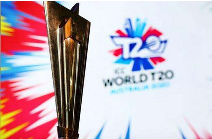
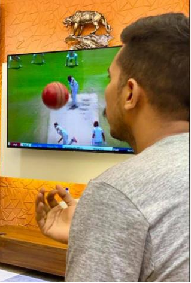
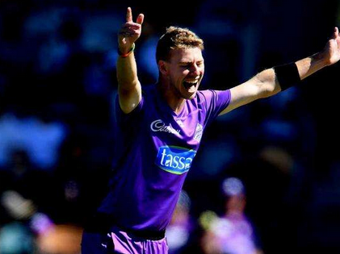
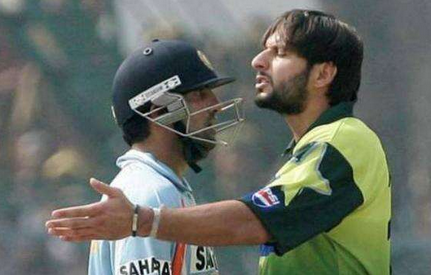

| News-portal360 |
|---|
২১ জুলাই
টি-টোয়েন্টি বিশ্বকাপ স্থগিত

এ বছর আর হচ্ছে না টি-টোয়েন্টি বিশ্বকাপ।এ বছর টি-টোয়েন্টি বিশ্বকাপ হবে না-এমন একটা আভাস আগে থেকেই ছিল। করোনা মহামারির বৈশ্বিক পরিস্থিতি এখন এ অবস্থায় আছে, তাতে এমন একটা বড় টুর্নামেন্ট আয়োজন করা অবাস্তব, এমন শঙ্কা ছিল খোদ স্বাগতিক অস্ট্রেলিয়ার ক্রিকেট বোর্ডেরই। শেষ পর্যন্ত হলো তা-ই। আজ আইসিসির এক সভা শেষে চুড়ান্তভাবে জানানো হয়েছে, এ বছর আর হচ্ছে না টি-টোয়েন্টি বিশ্বকাপ। এ বছর ১৮ অক্টোবর থেকে ১৫ নভেম্বর পর্যন্ত টি-টোয়েন্টি বিশ্বকাপ হওয়ার কথা অস্ট্রেলিয়ায়। এরপর আগামী বছর আরও একটা টি-টোয়েন্টি বিশ্বকাপ হওয়ার কথা ভারতে। তবে করোনাভাইরাস পরিস্থিতির কারণে এ বছরের টুর্নামেন্টটা শেষ পর্যন্ত হবে কি না, এই প্রশ্নটা বড় হয়ে উঠেছিল গত কয়েক মাসে। আইসিসির চূড়ান্ত সিদ্ধান্ত নিতে কিছুদিন সময় চেয়েছিল। সেই সিদ্ধান্তটাই অবশেষে এসেছে কাল। করোনা পরিস্থিতিতে স্থগিত হয়ে যাওয়া এই টুর্নামেন্টের ক্ষতি পুষিয়ে নিতে আইসিসির বড় ইভেন্টগুলোর সূচি নতুন করে ঠিক করা হয়েছে আজকের সভায়। নতুন সিদ্ধান্ত অনুযায়ী এ বছরের টি-টোয়েন্টি বিশ্বকাপটা হবে আগামী বছর অক্টোবর-নভেম্বরে, ১৪ নভেম্বর ২০২১ ধরা হয়েছে ফাইনালের সম্ভাব্য তারিখ। এরপর পরের বছর (২০২২) একই সময় হবে আরও একটি টি-টোয়েন্টি বিশ্বকাপ, যেটির ফাইনাল হতে পারে ১৩ নভেম্বর। আর ভারতে হতে যাওয়া ২০২৩ ওয়ানডে বিশ্বকাপ ফেব্রুয়ারি-মার্চ থেকে সরিয়ে নেওয়া হয়েছে ওই বছর অক্টোবর নভেম্বরে। ওই টুর্নামেন্টের ফাইনাল হবে ২৬ নভেম্বর।

মাঠে ফিরতে চেয়েই সৌম্য শুনলেন দুঃসংবাদ
মাঠে ফিরতে মরিয়া সৌম্য সরকার। কিন্তু সেটা আপাতত হচ্ছে না। টিভিতে চোখ রাখছিলেন ওল্ড ট্রাফোর্ডে ইংল্যান্ড–ওয়েস্ট ইন্ডিজ টেস্টে। ছবি: ফেসবুকআজকেই ফেসবুকে পোস্টটা দিলেন সৌম্য সরকার, আর আজই কি না শুনলেন দুঃসংবাদটা! ঢাকায় নিজের বাসার বসার ঘরে বসে ইংল্যান্ড-ওয়েস্ট ইন্ডিজ ওল্ড ট্রাফোর্ড টেস্ট দেখতে দেখতে সৌম্য ভাবছিলেন, কবে আবার ম্যাচ খেলবেন! ফেসবুক স্ট্যাটাসে সেটিই লিখলেন। সঙ্গে ছবি দিলেন, হাতে থাকা বলটাকে আলতো করে বাতাসে ছুড়ে দিয়ে টেলিভিশনে আনমনে দেখছেন ওল্ড ট্রাফোর্ড টেস্ট। ফেসবুকে এই ছবি পোস্ট করার ঘণ্টা দুই পরই এই প্রতিবেদকের কাছে সৌম্য শুনলেন দুঃসংবাদটা। এশিয়া কাপ এবং দ্বিপাক্ষিক সিরিজগুলোর মতো স্থগিত হয়ে গেছে টি-টোয়েন্টি বিশ্বকাপও। শুনে সৌম্যের প্রশ্ন, ‘এখন তাহলে কী হবে ভাই! বিশ্বকাপ কি বাতিলই হয়ে গেল, নাকি পরে হলেও হবে?’ যখন শুনলেন এ বছর না হলেও এবারের বিশ্বকাপটা আগামী বছর হবে, কিছুটা যেন স্বস্তি পেলেন সৌম্য। তা ছাড়া করোনাভাইরাসের কারণে এই যে সব খেলা বন্ধ হয়ে আছে, সেটাকে এক দিক দিয়ে সমর্থনও করেন তিনি, ‘সবাই চায় খেলা হোক। হয়তো চাইলে এখন শুরুও করা যায়। কিন্তু সেটা করতে গিয়ে যদি করোনায় আক্রান্ত হতে হয়, তাহলে তা ঠিক হবে না। ধরুন প্রিমিয়ার লিগ শুরু হলো। এরপর একটা ক্লাবের কয়েকজন ক্রিকেটার আক্রান্ত হলো। তখন ওই ক্লাবটার কী হবে? ঝুঁকি নিয়ে কিছু না করাই ভালো। আমাদের দেশ তো আর ইংল্যান্ড নয় যে সবাই সব মেনে চলবে।’ ব্যক্তিগত জীবনে সৌম্য নিজেও ঝুঁকি এড়িয়ে চলছেন। করোনাভাইরাসের সময়টাতে ঢাকায় করার তেমন কিছু নেই। গাড়ি চালক, গৃহপরিচারিকাদের ছুটি দিয়ে দিয়েছেন যেন সবাই ঘরে থাকতে পারে। এরপর সস্ত্রীক চলে গেলেন সাতক্ষীরার বাড়িতে। একটা কাজে এক দিনের জন্য ঢাকায় এসে আজ আবার ফিরে যাবেন সাতক্ষীরায়। বাড়িতে ফিটনেসের কাজগুলো নিয়মিত করলেও ব্যাটিং-বোলিং অনুশীলনের সুযোগ নেই। স্থানীয় কলেজ মাঠে একদিন অনুশীলন করতে গিয়ে কি অবস্থায় পড়েছেন, সেটা সৌম্যের মুখ থেকেই শুনুন, ‘ভেবেছিলাম একটু ব্যাটিং করব। কিন্তু একদিন গিয়েই আর যাইনি। ওখানে তো খোলা মাঠ। সব মানুষ ভিড় করে থাকে। এটা আরও ঝুঁকিপূর্ণ।’ কাল থেকে মিরপুরে অনুশীলন শুরু করেছেন মুশফিকুর রহিম-মোহাম্মদ মিঠুনরা। এটা দেখে সৌম্যও ভাবতে শুরু করেছেন তাদের সঙ্গে যোগ দেবেন কি না, ‘ভাবছি শুরু করব কি না। তার আগে আরও কয়েকটা দিন দেখি।’
নতুন গতি তারকা পেয়ে গেছে অস্ট্রেলিয়া?

প্যাট কামিন্স ও মিচেল স্টার্ক। যেকোনো সংস্করণে অস্ট্রেলিয়ার পেস আক্রমণের ভরসা। টেস্ট ক্রিকেট হলে সেখানে জশ হ্যাজলউডের নামটাও যোগ হয়। ব্যস, এটুকুই। প্রতিপক্ষের ব্যাটসম্যানদের মনে ভয় জাগানোর মতো আর কোনো পেসার ইদানিং দেখাতে পারছে না অস্ট্রেলিয়া। রাইলি মেরেডিথকে দলে ডেকে সে আক্ষেপ দূর করতে চাইছে অস্ট্রেলিয়া। ইংল্যান্ডের বিপক্ষে সম্ভাব্য সিরিজের জন্য প্রাথমিক দলে ডাক পেয়েছেন তাসমানিয়ার এই ফাস্ট বোলার। ২৪ বছর বয়সী এই পেসার এই প্রথম ডাক পেলেও তাঁর গুণমুগ্ধের তালিকায় আছেন অনেক রথি-মহারথী। শেন ওয়ার্ন তো বেশ আগ থেকেই তাঁকে চাইছেন দলে। এক সময় গতি দিয়ে প্রতিপক্ষের ব্যাটসম্যানের মনে আতঙ্ক সৃষ্টি করা ব্রেট লি ও মিচেল জনসনও মেরেডিথকে অস্ট্রেলিয়া দলে দেখতে চান। ব্রেট লি ও জনসন তা চাইতেই পারেন। শন টেইট ও এ দুজনের পর অস্ট্রেলিয়ার হয়ে গতির ঝড় তোলার দায়িত্ব নিয়েছেন স্টার্ক ও কামিন্স। কিন্তু চোট থেকে নিজেকে রক্ষা করার জন্য কামিন্সও গতি কমিয়ে ফেলেছেন। তাঁকে ইদানিং ১৪০ কিলোমিটার পার করতে খুব কমই দেখা যায়। স্টার্কই সবেধন নীলমনি। মাঝে কিছুদিন বিলি স্টেনলেককে দিয়ে পরীক্ষা চালিয়েছিল অস্ট্রেলিয়া। কিন্তু সাড়ে ৬ ফুটের বেশি উচ্চতার স্টেনলেককে দিয়ে সাফল্য পায়নি তারা। ঝাই রিচার্ডসন অমিত প্রতিভা নিয়ে হাজির হলেও বিশ্বকাপের আগে চোট পেয়ে ফর্ম হারিয়েছেন। তাই মেরেডিথকেই নতুন ভরসা মানছে অস্ট্রেলিয়া। গতি ভালোই আছে মেরেডিথের। ঘন্টায় ১৫২ কিলোমিটার গতিতে বল করতে পারেন। সে সঙ্গে বল তুলতে পারেন এবং দেরিতে সুইংও পান। গুড লেংথে পড়া তাঁর এক বলের গতি ও লেট সুইংয়ে বিভ্রান্ত হয়ে মার্কাস স্টয়নিসের মাথায় আঘাত পাওয়ার ভিডিও ক্রিকেট অস্ট্রেলিয়া ফলাও করে প্রচার করেছে। গত মৌসুমে চারদিনের মধ্যে স্টিভ স্মিথকে দুবার ও ডেভিড ওয়ার্নারকে একবার আউট করার পর ওয়ার্নার তো তখনই মেরেডিথকে জাতীয় দলের জন্য প্রস্তুত বলে ঘোষণা দিয়েছিলেন। বাউন্সারে প্রতিপক্ষকে ঘাবড়ে দেওয়ার ইচ্ছার কথা লুকাতে চান না এই ফাস্ট বোলার, 'যখনই কেউ বাউন্ডারি মারে আমি এটা করি। মাঝে মাঝেই আমার আগ্রাসন বেড়িয়ে পড়ে, তবে অন্যদের মতো অত বাজেভাবে না। আমি চেষ্টা করি নিজেকে শান্ত রাখতে। খেলার মাঝে স্বাভাবিকভাবেই আগ্রাসন চলে আসে। আমি শুধু চেষ্টা করি নিজেকে নিয়ন্ত্রণের মধ্যে রাখতে।' গতি আর বাউন্সে সতীর্থেরই সর্বনাশ করার রেকর্ড আছে মেরেডিথের। অনুশীলনে জর্ডান স্লিকের কবজি ভেঙে দেওয়ায় একমাস বাইরে ছিলেন স্লিক। এজন্য দুঃখিত হলেও মাঠে ও অনুশীলনে শত ভাগ দেওয়া থেকে নিজেকে আটকাতে চান না এই ফাস্ট বোলার। দেখা যাক চূড়ান্ত দলে জায়গা করে নিতে পারেন কি না মেরেডিথ।

'ব্যাটসম্যান গম্ভীরকে পছন্দ, মানুষ গম্ভীরের সমস্যা আছে'
ভারত-পাকিস্তান ওয়ানডে ম্যাচ। সে ম্যাচে উত্তপ্ত বাক্য বিনিময় হয় দুজনের। এরপর থেকেই তাঁদের সাপে-নেউলে সম্পর্ক। তা টিকে আছে ব্যাট তুলে রাখার পরও। বুঝতেই পারছেন গৌতম গম্ভীর ও শহীদ আফ্রিদির কথা বলা হচ্ছে। বরাবরের মতো আবারও গম্ভীরকে এক হাত নিলেন আফ্রিদি। সেটি মানুষ গম্ভীর, তবে ব্যাটসম্যান গম্ভীরকে পছন্দই করেন পাকিস্তানের সাবেক অলরাউন্ডার। এ কথা আফ্রিদি বলেছেন পাকিস্তানের সংবাদকর্মী জয়নব আব্বাসকে দেওয়া সাক্ষাৎকারে, 'ক্রিকেটার ও ব্যাটসম্যান হিসেবে তাঁকে সব সময় পছন্দ করে এসেছি। কিন্তু মানুষ হিসেবে সে মাঝে মাঝে এমন কিছু বলে এবং এমন কিছু করে, যাতে মনে হতে বাধ্য তার সমস্যা আছে। তার ফিজিও সে কথা আগেই বলেছে।' ভারতের সাবেক এ ওপেনারের ক্যারিয়ারে জাতীয় দলের ফিজিও ছিলেন প্যাডি আপটন। গম্ভীর সম্পর্কে প্যাডি তাঁর বইয়ে লিখেছেন, 'মানসিক শক্তিয়ে আমি যাদের সঙ্গে কাজ করেছি তাদের মধ্যে সে ছিল অন্যতম দুর্বল এবং সব সময় (মানসিকভাবে) নিরাপত্তাহীনতায় ভুগত।' ভারত জাতীয় দলের সঙ্গে ২০০৯ থেকে ২০১১ পর্যন্ত কাজ করা প্যাডি জানিয়েছেন, সেঞ্চুরি করে আউট হয়েও গম্ভীর নাকি কষ্ট পেতেন, ভুগতেন মানসিক যন্ত্রণায়। প্যাডির বইয়ে এমন মন্তব্যের জবাবে গম্ভীর বলেছিলেন, 'আমি সব সময় নিজেকে এবং ভারতকে বিশ্বসেরা দল হিসেবে দেখতে চেয়েছি। এ জন্য ১০০ করেও সন্তুষ্ট হতে পারিনি, প্যাডির বইয়ে যে কথা বলা হয়েছে। এখানে আমি খারাপ কিছু দেখি না।' গম্ভীরের আচরণগত সমস্যা নিয়ে এর আগেও মন্তব্য করেছেন আফ্রিদি। এর জবাবে ভারতের সাবেক ওপেনারের কথাগুলো অবশ্য বেশ তীর্যক ছিল, 'তুমি হাসালে! তবে আমরা এখনো পাকিস্তানিদের চিকিৎসার জন্য ভিসা দেই। আমি নিজে তোমাকে মনোবিদের কাছে নিয়ে যাব।'
অল্পের জন্য উইজডেনের অনূর্ধ্ব-২৫ টেস্ট দলে নেই মিরাজ
অল্পের জন্য উইজডেনের অনূর্ধ্ব-২৫ টেস্ট দল থেকে বাদ পড়েছেন মেহেদী হাসান মিরাজ। বিশ্বের ২৫ বছর বা তার কম বয়সী ক্রিকেটারদের মধ্য থেকে সেরা টেস্ট একাদশ বেছে নিয়েছে ক্রিকেটের বাইবেলখ্যাত সাময়িকী উইজডেন। একাদশ তো ঘোষণা করেছেই, যাঁরা তাঁদের বিবেচনায় থাকলেও অল্পের জন্য জায়গা পাননি, তাঁদের নামও জানিয়ে দিয়েছে উইজডেন। সেখানেই এল বাংলাদেশের অফস্পিনার মেহেদী হাসান মিরাজের নাম। তালিকায় দ্বিতীয় স্থানেই আছে অলরাউন্ডার মেহেদী হাসান মিরাজের নাম। বাদ পড়াদের তালিকার প্রথমে আছেন টেস্ট অভিষেকেই ওয়েস্ট ইন্ডিজের বিপক্ষে ১৩৪ রান করা ভারতের ২০ বছর বয়সী ব্যাটসম্যান পৃথ্বী শ। এরপরই আছেন মিরাজ। রশিদ খানকে মূল দলে জায়গা দিতেই তাঁকে বাদ দিতে হয়েছে বলে জানিয়েছে উইজডেন। নির্ভুল লাইন লেংথই মিরাজের মূল অস্ত্র। বিশেষ করে পিচে যদি স্পিনারদের জন্য বিন্দুমাত্র সাহায্য থেকে থাকে, মিরাজ হয়ে ওঠেন অনবদ্য। বয়স ১৯ ছোঁয়ার আগেই টেস্ট দলে ঢোকেন। অভিষেক হয়েছিল চট্টগ্রামে। ইংল্যান্ডের বিপক্ষে অভিষেক টেস্টেই বাজিমাত, প্রথম ইনিংসেই ৬ উইকেট! সেই টেস্টটা বাংলাদেশ জয়ের সম্ভাবনা জাগিয়েও ২২ রানে হেরে যায়। ঢাকায় দ্বিতীয় টেস্ট পুরোটাই মিরাজময়। দুই ইনিংসে ৬টি করে উইকেট তাঁর, বাংলাদেশ প্রথমবারের মতো টেস্টে হারায় ইংল্যান্ডকে! দুই টেস্টের সেই সিরিজে মিরাজ পেয়েছিলেন ১৯ উইকেট। ২২ বছর বয়সী মিরাজ ২২ টেস্টে এরই মধ্যে নিয়েছেন ৯০ উইকেট। আর মাত্র ১০টা উইকেট পেলেই চতুর্থ বাংলাদেশি বোলার হিসেবে টেস্টে ১০০ উইকেটের মাইলফলক ছোঁবেন। এখন পর্যন্ত মিরাজের সেরা পারফরম্যান্স ৫৮ রানে ৭ উইকেট। তাঁকে নিয়ে উইজডেন লিখেছে, ‘অভিষেক সিরিজে ইংল্যান্ডের বিপক্ষে তাঁর ঘূর্ণিজাল ছড়িয়ে, দুই টেস্টে ১৯ উইকেট নিয়ে তাঁর আগমনের প্রায় চার বছর হয়ে গেছে। (উইজডেনের দলে) রশিদ খান, যাঁকে বিচারক প্যানেল দলে পাঁচ জনের বোলিং আক্রমণে স্বাধীনতা দিতে চেয়েছে, তাঁর কাছে অল্প ব্যবধানে হেরে গেছেন মিরাজ। মাত্র ২২ বছর বয়স তাঁর, এরই মধ্যে দুবার ম্যাচে ১২ উইকেট পেয়েছেন, চতুর্থ বাংলাদেশি হিসেবে টেস্টে ১০০ উইকেটের মাইলফলকে পৌঁছানোর আর মাত্র দশ উইকেট দূরত্বে তিনি।’ মিরাজ আর শ ছাড়াও বাদ পড়াদের মধ্যে আরও আছেন পাকিস্তানের নাসিম শাহ, ওয়েস্ট ইন্ডিজের আলজারি যোশেফ, দক্ষিণ আফ্রিকার লুঙ্গি এনগিডি, আফগানিস্তানের ইব্রাহিম জাদরান, ওয়েস্ট ইন্ডিজের শিমরন হেটমায়ার, শ্রীলঙ্কার লাসিথ এমবুল্দেনিয়া, অস্ট্রেলিয়ার ঝাই রিচার্ডসন ও ভারতের কুলদীপ যাদব। আর দলে কারা সুযোগ পেয়েছেন? পরিচিত সব নামই সেখানে। অধিনায়ক পাকিস্তানের বাবর আজম। দলটা দেখে নিন: উইজডেনের অনূর্ধ্ব-২৫ বিশ্ব টেস্ট একাদশ: এইডেন মার্করাম (দক্ষিণ আফ্রিকা), ডম সিবলি (ইংল্যান্ড), কুশল মেন্ডিস (শ্রীলঙ্কা), বাবর আজম (পাকিস্তান)—অধিনায়ক, ওলি পোপ (ইংল্যান্ড), ঋষভ পন্ত (ভারত)—উইকেটকিপার, স্যাম কারেন (ইংল্যান্ড), রশিদ খান (আফগানিস্তান), জফরা আর্চার (ইংল্যান্ড), কাগিসো রাবাদা (দক্ষিণ আফ্রিকা) ও শাহিন শাহ আফ্রিদি (পাকিস্তান)।
বৃষ্টি কঠিন করে দিল স্টোকসদের কাজটা
বৃষ্টিতে ভেসে গেল ওল্ড ট্রাফোর্ড টেস্টের তৃতীয় দিন। বাকি দুদিনে ওয়েস্ট ইন্ডিজের ১৯ উইকেট নেওয়া কঠিন মনে করছেন বেন স্টোকস। সাউদাম্পটনে হারার পর ইংল্যান্ডের সামনে সুযোগ এসেছিল ওল্ড ট্রাফোর্ড টেস্ট জিতে সিরিজে সমতা ফেরানোর। সেই পথে বেশ কিছুটা এগিয়েও ছিল ইংল্যান্ড। কিন্তু বৃষ্টি এসে এখন কাজটা কঠিন করে দিল জো রুট-বেন স্টোকসদের। ক্রিকেটের চিরশত্রু বৃষ্টির কারণে আজ তৃতীয় দিনে একটি বলও গড়ায়নি ওল্ড ট্রাফোর্ডে। ম্যানচেস্টারের স্থানীয় সময় বিকেল ৪টার দিকে দিনটা পরিত্যক্ত ঘোষণা করেন আম্পায়াররা। প্রথম ইনিংসে ইংল্যান্ড ৯ উইকেটে ৪৬৯ রান করে ইনিংস ঘোষণার পর ওয়েস্ট ইন্ডিজ ১ উইকেটে তুলেছে ৩২ রান। ফলো অন এড়াতে আরও ২৩৮ রান দরকার। কিন্তু অতিথিদের ফলো অনে ফেলেও যে বাকি দুই দিনে ম্যাচ জেতা কঠিন হয়ে যাবে, সেটা স্বীকার করছেন প্রথম ইনিংসে ১৭৬ রানের দারুণ ইনিংস খেলা ইংলিশ অলরাউন্ডার বেন স্টোকস। বৃষ্টিবিঘ্নিত দিনের একফাঁকে স্কাই স্পোর্টসের সঙ্গে এক সাক্ষাৎকারে বলেছেন, ‘পরিস্থিতিটা আমাদের জন্য আদর্শ নয়। আবহাওয়া দেখে যা মনে হচ্ছে, আমাদের হয়তো বাকি দুই দিনে ১৯ উইকেট নেওয়ার চেষ্টা করতে হবে।’ কাল আরও ওভার বিশেক আগে ইনিংস ঘোষণা করে দিলে কিছুটা লাভ হতো কি না, সেই প্রশ্ন তুলেছেন অনেকে। তাতে হয়তো ওয়েস্ট ইন্ডিজের কয়েকটা উইকেট ফেলে চাপে রাখার সুযোগ পাওয়া যেত। স্টোকস অবশ্য সেই বিতর্কে গেলেন না। সিরিজের প্রথম টেস্টে জো রুটের অনুপস্থিতিতে ইংল্যান্ডকে নেতৃত্ব দিয়ে হারা বেন স্টোকস এখনই হাল ছাড়ছেন না, ‘উইকেটে কিছু আছে, যা এখন পর্যন্ত বোলারদের সাহায্য করেছে কিছুটা। আমাদের চেষ্টা থাকবে সেটা কাজে লাগানোর।’ আর এ জন্য নিজেদের বোলিং আক্রমণে আস্থা রাখতে চাইছেন ইংলিশ অলরাউন্ডার, ‘আমাদের যে বোলিং আক্রমণ, খেলা একবার শুরু হলে যেকোনো কিছুই সম্ভব।’
যে 'রেকর্ডে' হোল্ডারদের ওপরে শুধু বাংলাদেশ
২০১৫ সালের অক্টোবর থেকে টেস্টে তিন বার টস জিতে ফিল্ডিং নিয়ে তিনবারই হেরেছে বাংলাদেশ। 'টসে জিতে ব্যাটিং নাও। যদি মনে কোনো দ্বিধা থাকে, তাহলে একটু ভাবতে পার। তারপর ব্যাটিং নাও।' ডব্লিউ জি গ্রেসের কথাটা মানলেন না জেসন হোল্ডার। কাল ওল্ড ট্রাফোর্ডে টস জিতেই ক্রিকেটের অমর বুড়োকে কথা অমান্য করে ফিল্ডিং নিয়ে নিলেন ওয়েস্ট ইন্ডিজ অধিনায়ক। তাতে ওল্ড ট্রাফোর্ডকে ফিরে যেতে হলো সেই ১৯৯৩ সালে। ওই মাঠে যে এরপর গত ২৭ বছরে আর কোনো অধিনায়ক টস জিতে ফিল্ডিং নেননি। ৮১ রানে ইংল্যান্ডের প্রথম ৩ উইকেট তুলে নিয়ে অধিনায়কের সিদ্ধান্তকে ঠিক প্রমাণ করার দায়িত্বটা ভালোই পালন করছিলেন রোস্টন চেজ–আলজারি জোসেফরা। কিন্তু ম্যানচেস্টারের শেষ বিকেলে হোল্ডারের সিদ্ধান্তের যৌক্তিকতাকে প্রশ্নবিদ্ধ করে দিলেন ডম সিবলি ও বেন স্টোকস। আর কোনো উইকেট না হারিয়েই ইংল্যান্ড দিন শেষ করেছিল ২০৭ রানে। জেসন হোল্ডার অবশ্য টস জিতলে ফিল্ডিং নেওয়াটাই ভালো মনে করেন আজকাল। ২০১৯ সালের শুরু থেকে সর্বশেষ যে ছয় টেস্টে টস জিতেছেন তার পাঁচটিতেই প্রথমে ফিল্ডিং নিয়েছেন হোল্ডার। এর দুটিতে জিতেছে ওয়েস্ট ইন্ডিজ, হেরেছেও দুটিতে। এবার ওল্ড ট্রাফোর্ডে হার না জিত-কে এগিয়ে যাবে কে জানে! হোল্ডার ওয়েস্ট ইন্ডিজের অধিনায়ক হয়েছেন ২০১৫ সালের অক্টোবরে। সেই সময় থেকে শুরু করে গত প্রায় পাঁচ বছরে ১১ বার টস জিতে ফিল্ডিং নিয়েছেন হোল্ডার। এই সময়ে ক্যারিবীয়দের চেয়ে টস জিতে বেশি ফিল্ডিং নিয়েছে শুধু একটি দল—নিউজিল্যান্ড। কিউইরা ওই ১৪ ম্যাচের ১০টিতেই জিতে অধিনায়কের সিদ্ধান্তের যৌক্তিকতাও প্রমাণ করেছে। কিন্তু ওয়েস্ট ইন্ডিজ? ওল্ড ট্রাফোর্ড টেস্টের আগে ১০ ম্যাচের মাত্র তিনটিতে জয় পাওয়া হোল্ডারের দল হেরেছে বাকি সাতটিতে। এই সময়ে টেস্টে টস জিতে ফিল্ডিং নিয়ে হারার রেকর্ডে ওয়েস্ট ইন্ডিজের ওপরে আছে শুধু বাংলাদেশ। তিনটি টেস্টে এমন সিদ্ধান্ত নিয়ে প্রতিবারই প্রায়শ্চিত্ত করতে হয়েছে। তিন ম্যাচের দুটিই আবার ২০১৭ সালের দক্ষিণ আফ্রিকা সফরে। ওই সিরিজে বাংলাদেশের অধিনায়ক ছিলেন মুশফিকুর রহিম। তৃতীয় ঘটনা ২০১৮ সালে ওয়েস্ট ইন্ডিজ সফরে কিংস্টনে। এবার অধিনায়কের নাম সাকিব আল হাসান। অন্যদিকে সাফল্যের বিচারে নিউজিল্যান্ডের ঠিক পরেই রাখতে হয় দক্ষিণ আফ্রিকাকে। চার ম্যাচে টস জিতে ফিল্ডিং নিয়ে তিনটিতেই যে জিতেছে প্রোটিয়ারা।

৪৮০০ কোটি রূপি গচ্ছা দেওয়ার মুখে ভারতীয় বোর্ড
কত বড় বিষয় নিয়ে আজ সভায় বসার কথা ভারতীয় ক্রিকেট নিয়ন্ত্রক সংস্থার (বিসিসিআই)। আইপিএলের ভাগ্য নির্ধারিত হতে পারে আজ। পাশাপাশি ভারতের ভবিষ্যত সফর পরিকল্পনা নিয়ে আলোচনা হবে। আলোচনা হওয়ার কথা ভারতে অনুষ্ঠিতব্য ২০২১ টি-টোয়েন্টি বিশ্বকাপ ও ২০২৩ ওয়ানডে বিশ্বকাপের কর রেয়াতের বিষয় নিয়ে যে বিসিসিআইয়ের সঙ্গে লেগেছে আইসিসির, সেটি নিয়েও। এখন আলোচ্যসূচিতে আরেকটি বিষয় সম্ভবত যোগ হয়ে গেল। বিসিসিআই যে ৪৮০০ কোটি রূপি গচ্ছা দেওয়ার মুখে! ২০১২ সালে আইপিএলের সাবেক ফ্র্যাঞ্চাইজি ডেকান চার্জার্সের ফ্র্যাঞ্চাইজি সত্ত্ব বাতিল করে বিসিসিআই। এতদিন পর মুম্বাইয়ের সুপ্রিম কোর্ট নিয়োজিত মধ্যস্থতাকারীর রায়, সেটি অবৈধ ছিল। সে কারণে এখন ডেকান চার্জার্সকে ক্ষতিপূরণ হিসেবে ৪৮০০ কোটি রূপি দেওয়ার নির্দেশ দেওয়া হয়েছে বিসিসিআইকে। ২০০৮ সালে যে আটটি দল নিয়ে মূলত শুরু হয়েছিল আইপিএল, তার একটি ছিল ডেকান ক্রনিকল হোল্ডিংস লিমিটেডের (ডিসিএইসএল) মালিকানাধীন ডেকান চার্জার্স। ২০০৯ সালে অস্ট্রেলিয়ান কিংবদন্তি উইকেটকিপার অ্যাডাম গিলক্রিস্টের অধিনায়কত্বে শিরোপাও জেতে। কিন্তু খেলোয়াড়দের বেতন ঠিকমতো না দেওয়াসহ নানা অভিযোগে ২০১২ সালে সেটির সত্ত্ব বাতিল করে বিসিসিআই। পাশাপাশি বিসিসিআই তখন এ-ও দাবি করে যে, ফ্র্যাঞ্চাইজিটি বিসিসিআইয়ের নীতিমালা ভেঙেছে। ডিসিএইচএল সে সময় ফ্র্যাঞ্চাইজিটি নিলামেও তোলারও চেষ্টা করেছে, কিন্তু পিভিপি ভেনচারসের কাছ থেকে একমাত্র বিডটি নাকচ করে দেয়। পরে বিসিসিআই ফ্র্যাঞ্চাইজিটিকে নিষিদ্ধ করে তাদের সব খেলোয়াড়কে নিলামে নিয়ে নেয়। সত্ত্ব বাতিলের সিদ্ধান্তের বিরুদ্ধে ডিসিএইচএল তখন সুপ্রিম কোর্টের কাছে যায়। এর মধ্যে বোর্ড ততদিনে ফ্র্যাঞ্চাইজিটিকে আবার নিলামে তোলে। ফ্র্যাঞ্চাইজিটি পরে চেন্নাইভিত্তিক সংবাদমাধ্যম সান নেটওয়ার্কের কাছে বিক্রি করা হয়, যেটি এখন সানরাইজার্স হায়দরাবাদ নামে পরিচিত। সুপ্রিম কোর্ট ততদিনে অবসরপ্রাপ্ত বিচারক সিকে ঠাক্কারকে নিয়োগ দেন দুই পক্ষের মধ্যে মধ্যস্থতাকারী হিসেবে। এতদিন পর মধ্যস্থতাকারীর রায়ে জিতে গেছে ডিসিএইচএল। আগামী সেপ্টেম্বরের মধ্যে ডিসিএইচএলকে ৪৮০০ কোটি রুপি পরিশোধ করতে বিসিসিআইকে নির্দেশ দেওয়া হয়েছে। বিসিসিআই এই রায়ের বিরুদ্ধে আবার আদালতে যাবে বলে ধারণা করা হচ্ছে।
টি-টোয়েন্টি বিশ্বকাপ, আইপিএলের ভাগ্যে নতুন মোড়?

স্থগিত হতে যাচ্ছে টি-টোয়েন্টি বিশ্বকাপ, দুই মাস পর থেকেই শুরু হতে যাচ্ছে আইপিএল। এমনটাই জল্পনা-কল্পনা চলছে ভারতীয় সংবাদমাধ্যমে করোনা পরিস্থিতিতে একাধিক ক্রীড়া ইভেন্টের ভবিষ্যত নিয়ে দেখা দিয়েছে সংশয়। বিশেষ করে ক্রিকেটের। এ বছরের শেষ দিকে হওয়ার কথা ছিল টি-টোয়েন্টি বিশ্বকাপ। এতদিনে শেষ হয়ে যেত আইপিএলের ত্রয়োদশ মৌসুম। সবকিছুই থেমে আছে করোনার কারণে। কবে হবে টুর্নামেন্টগুলো? কেউ জানে না নিশ্চিতভাবে। এদিকে ভারতীয় সংবাদমাধ্যম অনুমান করছে, বছরের শেষ দিকে অস্ট্রেলিয়ায় অনুষ্ঠিত হতে যাওয়া টি-টোয়েন্টি বিশ্বকাপ শেষমেশ স্থগিত হয়ে যাবে। কিন্তু আইপিএল থামবে না। ভারতে না হলেও, সংযুক্ত আরব আমিরাতে আইপিএল পরিচালনা করার সিদ্ধান্ত দেবে বিসিসিআই, এমন জল্পনা-কল্পনাই চলছে ভারতের ক্রিকেটমহলে। আর সংযুক্ত আরব আমিরাতে আইপিএল হতে বেশি দেরি নেই আর। এই সেপ্টেম্বরেই আয়োজন করা হবে আইপিএল। সেপ্টেম্বর থেকে নভেম্বর পর্যন্ত সময়টায় আয়োজন করা হবে টুর্নামেন্টটি। সেপ্টেম্বরের মধ্যেই ওয়েস্ট ইন্ডিজ, ইংল্যান্ড, অস্ট্রেলিয়া ও নিউজিল্যান্ডের খেলোয়াড়েরা আন্তর্জাতিক ক্রিকেট খেলে ফেলবেন। ফলে আইপিএলে খেলতেও সমস্যা হবে না তাঁদের। ২০২০ আইপিএল বাতিল হয়ে গেলে চার হাজার কোটি রুপি লোকসানে পড়বে ভারতীয় ক্রিকেট বোর্ড।প্রত্যেক ফ্র্যাঞ্চাইজির ক্ষতি হবে ন্যূনতম ১০০ কোটি রুপি। তাই যে করেই হোক, আইপিএল আয়োজন করতে চাইছে ভারত। জানা গেছে, আইপিএলের আট মালিকপক্ষ এই সপ্তাহের শুরুতে সভা করে সিদ্ধান্ত নিয়েছেন, বিদেশে আইপিএল আয়োজন করা হলে কারওর কোনো সমস্যা নেই। প্রতি আসরে অন্তত চার হাজার কোটি রুপি করে লাভ হয় বিসিসিআইয়ের, বৈশ্বিক সম্প্রচার স্বত্ব ও স্পনসরদের কাছ থেকে পাওয়া অর্থ মিলিয়ে। যার বেশ বড় অংশ যায় আটটি ফ্র্যাঞ্চাইজির পকেটে। কেউই ১০০-১৫০ কোটি রুপির কম পায় না। এর আগেও যে বিদেশে আইপিএল হয়নি, তা নয়। আইপিএলের দ্বিতীয় মৌসুমই হয়েছিল দক্ষিণ আফ্রিকায়। ২০১৪ সালে লোকসভা নির্বাচনের জন্য আইপিএলের এক অংশ হয়েছিল সংযুক্ত আমিরাতেই।
ইংল্যান্ডে করোনামুক্ত পাকিস্তানি ক্রিকেটার
ইংল্যান্ডে গিয়ে করোনা পজিটিভি হওয়া পাকিস্তানি স্পিনার কাশিফ ভাট্টি অবশেষে করোনামুক্ত হয়েছেন পাকিস্তান থেকে ইংল্যান্ডগামী উড়ান ধরার আগে যে করোনা পরীক্ষা হয়েছিল, তাতে কাশিফ ভাট্টি নেগেটিভই হয়েছিলেন। কিন্তু ইংল্যান্ডে গিয়ে আবার করোনা ধরা পড়ে বাঁহাতি স্পিনারে। আজ আবার সুখবর পেলেন সেই ভাট্টি। ইংল্যান্ড অ্যান্ড ওয়েলস ক্রিকেট বোর্ড (ইসিবি) জানিয়েছে পরপর দুটি পরীক্ষায় নেগেটিভ হয়েছেন ভাট্টি। তাই আর দলের সঙ্গে যোগ দিতে বাধা নেই তাঁর। ইসিবির এক মুখপাত্র আজ ভাট্টিকে নিয়ে সুখবর দিলেন, 'খেলোয়াড়টির দ্বিতীয় পরীক্ষাতেও নেগেটিভ এসেছে। তাই অন্য খেলোয়াড় ও স্টাফদের সংক্রমিত হওয়ার শঙ্কা নেই।' ইংল্যান্ডে রওনা দেওয়ার আগে পিসিবির করানো পরীক্ষায় ভাট্টি দুবার কোভিড-১৯ নেগেটিভ হয়েছিলেন। এমনকি বিমানে উঠতে যে পরীক্ষা করিয়েছিলেন, সেখানেও নেগেটিভ এসেছিল। সেই তিনিই আবার জৈব নিরাপদ পরিবেশে ইসিবির করা পরীক্ষায় পজিটিভ হন! তখন তাঁকে নিয়ম মেনে দল থেকে বিচ্ছিন্ন হয়ে সঙ্গনিরোধ অবস্থায় রাখা হয়। ইসিবির এক মুখপাত্র বলেছেন,'ইংল্যান্ডের জনস্বাস্থ্য ও ভাইরাসবিদের ভাষ্য অনুযায়ী, আগে যে কোভিড-১৯ আক্রান্ত হয়েছিলেন, সেটি পুরোপুরি তাঁর শরীর থেকে যায়নি। নিরাপত্তা আগে, এটির ভিত্তিতে খেলোয়াড়কে আলাদা করে ফেলা হয়েছে।' সুসংবাদ পেয়েছেন আরেক পাকিস্তানি ক্রিকেটার হারিস রউফও। এর আগে তিনি পজিটিভ হলেও অনেকটাই সুস্থ হয়ে উঠেছেন। পিসিবি বলছে হারিস যদি আবারও নেগেটিভ হয় তবেই ২৬ বছর বয়সী পেসারকে পাঠানো হবে ইংল্যান্ডে।
সিপিএল এর অফার ফিরিয়ে দিল তামিম-মাহমুদউল্লাহ-মুস্তাফিজ

তামিমকে ৭৫ লাখ টাকায় কিনতে চেয়েছিল একটি ফ্র্যাঞ্চাইজি। মোস্তাফিজকে কিনতে চেয়েছিল ৬০ লাখ টাকায়। মাহমুদউল্লাহকে কত দামে কিনতে চেয়েছিল তা জানা যায়নি। আগামী মাসে ত্রিনিদাদে বসছে ক্যারিবিয়ান প্রিমিয়ার লিগের (সিপিএল) পরের আসর। দর্শকশূন্য স্টেডিয়ামে আয়োজন করতে যাওয়া ফ্র্যাঞ্চাইজি টি-টোয়েন্টি টুর্নামেন্টে খেলার প্রস্তাব পেয়েছিলেন বাংলাদেশের তিন ক্রিকেটার তামিম ইকবাল, মাহমুদউল্লাহ ও মোস্তাফিজুর রহমান। কিন্তু করোনা পরিস্থিতি ও ঢাকা প্রিমিয়ার ক্রিকেট লিগের কথা মাথায় রেখে তিনজনই ফিরিয়ে দিয়েছেন লোভনীয় সেই প্রস্তাব। বাংলাদেশের ওয়ানডে অধিনায়ক তামিম ইকবালকে ৭৫ লাখ টাকায় দলে নিতে চেয়েছিল একটি ফ্র্যাঞ্চাইজি। কিন্তু বাঁহাতি ওপেনার জানালেন, সবকিছু বিবেচনা করে ফিরিয়ে দিয়েছেন সেই প্রস্তাব, ‘অনেক কিছু ভাবতে হয়েছে। আমাদের দেশের করোনাভাইরাস পরিস্থিতি তো এখনো খুব একটা ভালো না। ওয়েস্ট ইন্ডিজ ও পুরো বিশ্বের বিমান যোগাযোগ এখনো স্বাভাবিক হয়নি। ঈদের পর ঢাকা প্রিমিয়ার লিগের খেলা যদি শুরু হয়—সেটিও ভাবতে হয়েছে।’ পেসার মোস্তাফিজুর রহমানকে দলে নিতে বাংলাদেশি মুদ্রায় ৬০ লাখ টাকা খরচ করতে রাজি ছিল আরেকটি ফ্র্যাঞ্চাইজি। কিন্তু প্রস্তাব ফিরিয়ে দিয়েছেন তিনিও। তামিমের মতো মোস্তাফিজও চাইছেন দেশের মাটিতে আগে খেলতে, ‘দেশের যে পরিস্থিতি, এই অবস্থায় কোথাও যাওয়া কঠিন। অনেকগুলো সিরিজ বাতিল হয়ে গেল। আশায় আছি, সামনে আবার হুট করে যদি কিছু হয়, এ কারণে দেশের হয়ে খেলার আগে কোথাও খেলতে চাইছি না। আর শুনেছি খেলা শুরু হলে, প্রিমিয়ার লিগ দিয়ে হতে পারে। ওটাও ভাবছি।’ টি-টোয়েন্টি অধিনায়ক মাহমুদউল্লাহও করোনার এই সময়ে ঝুঁকি নিয়ে ক্যারিবিয়ানে যেতে চান না। তাঁকে দলে নিতে কত টাকা খরচ করতে চেয়েছিল সিপিএলের ফ্র্যাঞ্চাইজি তা অবশ্য জানা যায়নি।

‘অত্যাচারিতদের পাশেই আছি’—সতীর্থের সমর্থনে আমলা
এনগিডির পাশে দাঁড়িয়েছেন হাশিম আমলা। ছবি: এএফপিজর্জ ফ্লয়েড হত্যাকাণ্ড ঘিরে বিশ্বজুড়ে প্রতিবাদ চলছেই। কিন্তু ‘ব্ল্যাক লাইভস ম্যাটার’ আন্দোলনের পক্ষে সরব হয়ে নিজ দেশেই সমালোচনার মুখে পড়েছেন দক্ষিণ আফ্রিকান পেসার লুঙ্গি এনগিডি। বোটা ডিপেনার, প্যাট সিমকক্সের মতো সাবেক ক্রিকেটাররা রীতিমতো তাঁর এই আন্দোলন নিয়ে হাজারো প্রশ্ন শুরু করেছেন। কিন্তু এনগিডির পাশে এসে দাঁড়িয়েছেন সতীর্থ হাশিম আমলা। জর্জ ফ্লয়েড হত্যার প্রতিবাদে এনগিডি কিছুদিন আগেই বলেছিলেন, ‘জাতি হিসেবে আমাদের বর্ণবৈষম্যের ইতিহাস রয়েছে। তাই অন্য দেশগুলোর মতো দল হিসেবে আমাদেরও এর প্রতিবাদ করা উচিত।’ দক্ষিণ আফ্রিকায় সাদা-কালোর বৈষম্য এখনো রয়ে গেছে, এনগিডির এমন মন্তব্যে সমর্থন করে এক বিবৃতিতে সই করেছেন সাবেক ও বর্তমান ৩১ জন ক্রিকেটার। এই তালিকায় অবশ্য হাশিম আমলার নাম নেই। কিন্তু ৩৭ বছর বয়সী এই ক্রিকেটার তাঁর ইনস্টাগ্রামে জানিয়েছেন, ‘সাদাদের চেয়ে কালো অথবা কালোদের চেয়ে সাদা শ্রেষ্ঠ কিংবা এক জাতির চেয়ে অন্য জাতি ভালো এটা শুধুই একটা ভ্রান্ত ধারণা। এ ছাড়া কিছুই না।’ অন্যরা যখন চুপ করে আছে তখন এনগিডি একাই এমন একটা সাহসী উদ্যোগ নিয়েছেন বলে প্রশংসা ঝরল আমলার কণ্ঠে, ‘আমিসহ আমাদের অনেকেই এই ভ্রান্তির কুফল ভোগ করেছেন, আমাদের অনেকেরই (বর্ণবাদ নিয়ে) অনেক ভয়ংকর গল্প আছে। তবে লুঙ্গি এনগিডির মতো ব্যতিক্রমী তরুণেরা আমাদের সবার হয়ে এই প্রশংসার কাজ করছে। ভাই তোমাকে ধন্যবাদ। গোপনে এবং প্রকাশ্যে যাঁরা এটার জন্য লড়ে যাচ্ছে সবাইকেই ধন্যবাদ।’ সারা বিশ্বের সকল নিপীড়িত মানুষের পক্ষেই আমলা, ‘এই দেশে, বিশ্বের সবখানে নিপীড়িত অনেক মানুষ আছেন। ক্রিকেটেও আছেন। এদের মধ্যে কালো চামড়ার মানুষেরাই বেশি খারাপ অবস্থায় আছেন। সবার জন্য ন্যায়বিচারই সত্যিকারের ন্যায়বিচার যা শান্তি বয়ে আনবে। এর অন্যথা যে কোনো কিছুই বিভ্রান্তিকর। সকল অত্যাচারিতের সঙ্গেই আছি আমি। আর আরেকবার বলছি, আমি (আন্দোলনে) এনগিডির পাশেই দাঁড়াচ্ছি।’ বিশ্বের বিভিন্ন খেলায় বর্ণবাদের বিরুদ্ধে প্রতিবাদ দেখে খুশি এনগিডি। হাঁটু গেড়ে বসে, জার্সিতে ব্ল্যাক লাইভস ম্যাটার লিখে ও ব্ল্যাক পাওয়ার স্যালুট দিয়ে বর্ণবাদবিরোধী আন্দোলনে নিজেদের সমর্থন দিয়ে যাচ্ছেন ক্রীড়াঙ্গনের মানুষেরা। এই যেমন গত সপ্তাহে সাউদাম্পটনে ইংল্যান্ডের বিপক্ষে ওয়েস্ট ইন্ডিজ প্রথম টেস্ট শুরুর আগে দুই দলই বর্ণবৈষম্যের বিরুদ্ধে প্রতিবাদ জানিয়েছে। ম্যাচে হোল্ডারদের টি শার্টে লেখা ছিল ব্ল্যাক লাইভস ম্যাটারের স্লোগান। এসব দেখে উচ্ছ্বসিত এনগিডি, ‘সব খেলার দিক থেকে ব্ল্যাক লাইভস ম্যাটার আন্দোলনকে সমর্থন দিতে দেখতে ভালো লাগে। ওয়েস্ট ইন্ডিজের খেলোয়াড়দের দেখেছি, হাতে কালো গ্লাভস পরা।’ ইংলিশ প্রিমিয়ার লিগেও এসব ম্যাচের আগে হাঁটু গেড়ে প্রতিবাদ জানাচ্ছেন খেলোয়াড়েরা। এগুলো এনগিডিকে এই আন্দোলন নিয়ে কাজ করতে আরও অনুপ্রেরণা জোগাচ্ছে, ‘এসব দেখে আবেগী হয়ে পড়ি। খুবই কঠিন একটা বছর এটা। শেষ পর্যন্ত মানুষ এসব নিয়ে কথা বলছে। ক্রিকেট বিশ্বকে এগিয়ে আসতে দেখাও আমার কাছে অনেক বড় কিছু। এটা আসলেই অনুপ্রেরণাদায়ী।’